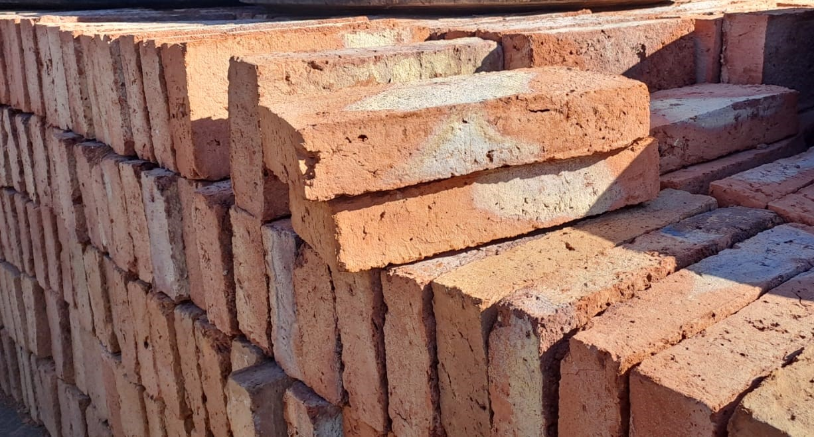
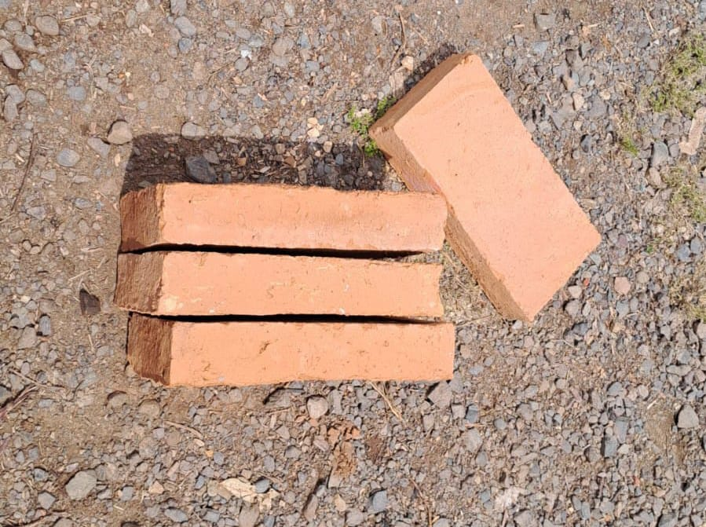
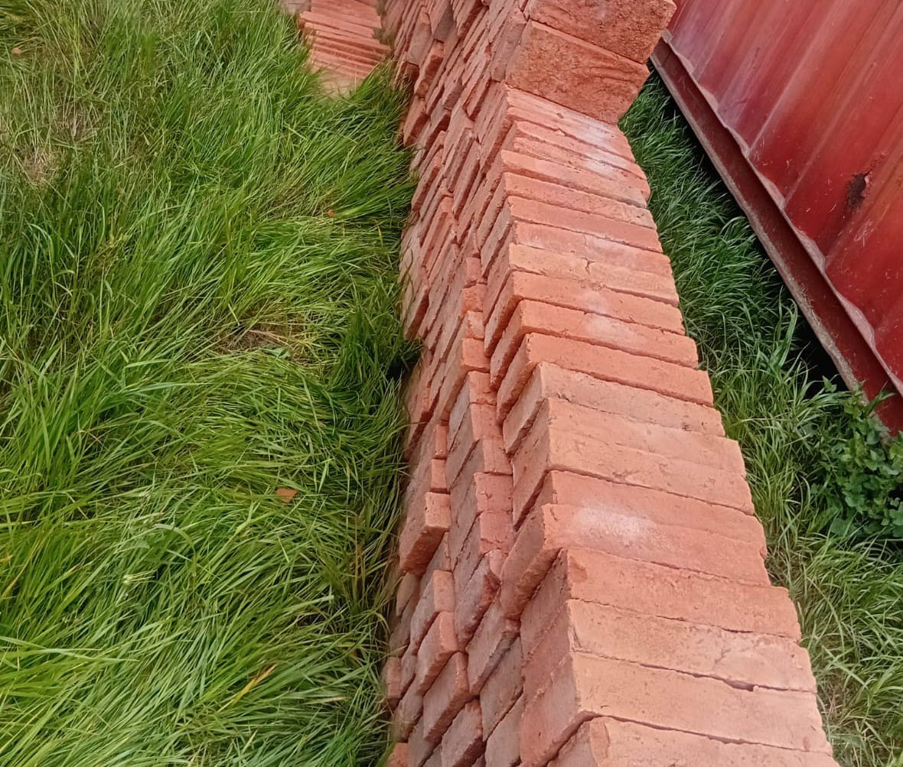
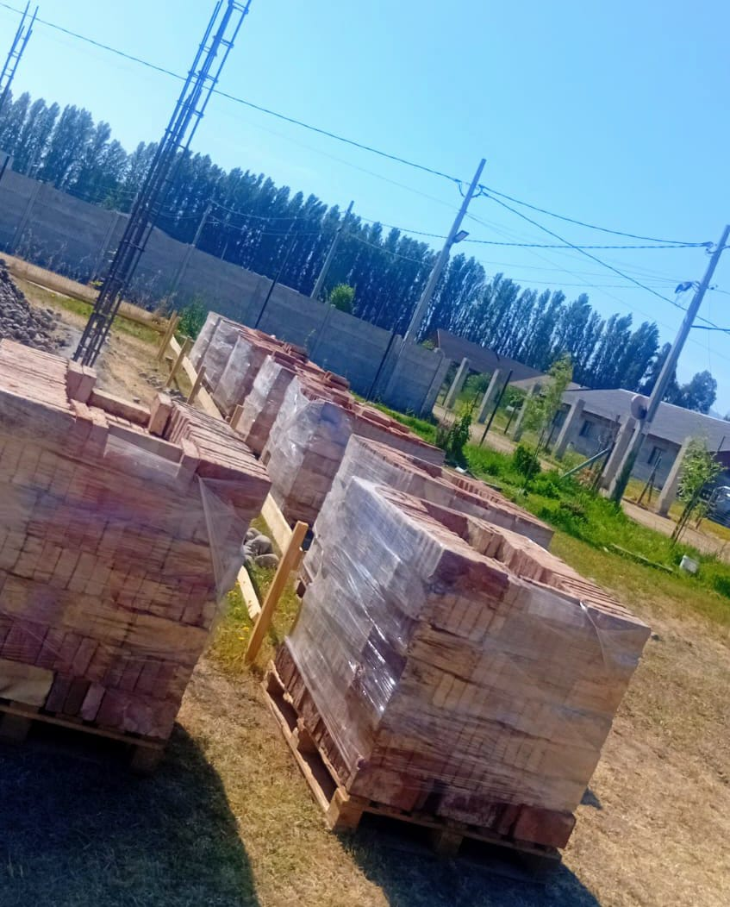
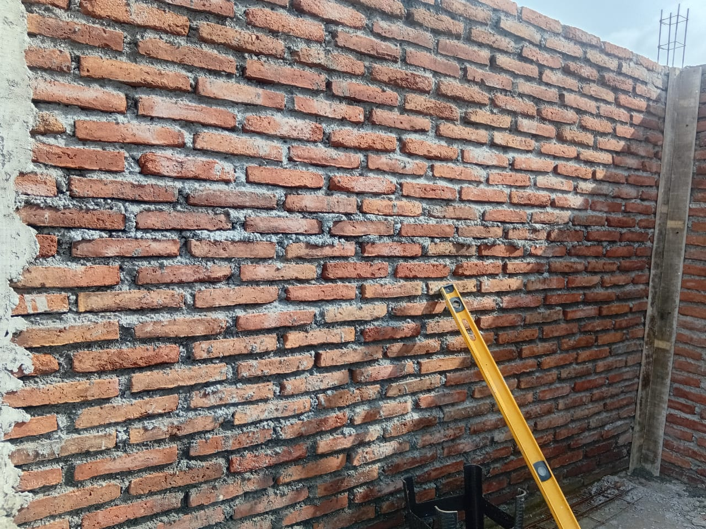
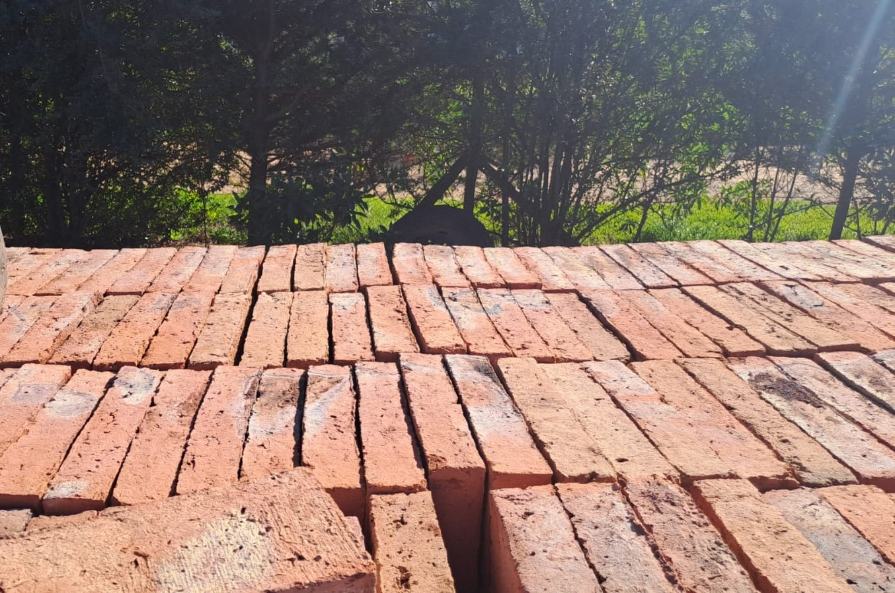

Bienvenido a Ladrillos Rubilar
vendemos ladrillos de alta calidad para construcción: fiscal y muralla.
Contáctanos
¿Quieres hacer un pedido o cotizar? Llámanos directamente o escríbenos por WhatsApp.
📞 Llamar al dueño: +56 9 9416 0010 💬 Cotiza por WhatsAppNuestros productos

Ladrillo Fiscal
29×14×5.5 cm
Ladrillo de arcilla artesanal, hecho a mano y cocido en horno. Ideal para muros estructurales, combina resistencia, durabilidad y acabado rústico.

Ladrillo Muralla
20×40×6 cm
Ladrillo de barro cocido artesanalmente, elaborado a mano por expertos. Perfecto para fachadas y muros decorativos, con textura firme y color natural.




Horario: Lunes a domingo
Ubicación: Entregamos a todo Rancagua, Rengo, Requínoa, Graneros, La Compañía, Coltauco, Coinco, etc.